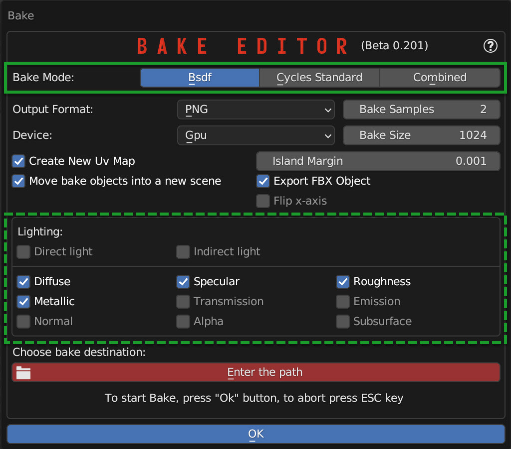
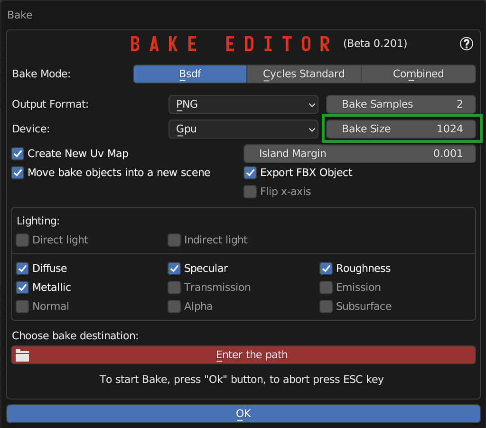

Bake Editor Panel
Warning
In Blender 3.6.0 there is an Blender Crash during the Bake, please update Blender to 3.6.1 or higher! I tried to do a bugfix, but it doesn’t depend on me in that version 3.6.0 there is a Bug
Important
The Bake Editor Panel remains in Beta phase as it is still under development, there are still some cases in which the Bake will not work correctly, although they are very few.
The bake is a fairly slow and heavy process, this tool has been designed to facilitate the Bake process, which normally in Blender is a much more complex and long process and requires a lot of experience and time.
Hint
What is the Bake?
The Bake is a process that is normally used to merge into a single material (Textures) so that it can be exported to a game engine.
Do you have to use the bake to export an object with material to a game engine?
Actually no, in fact I personally do not recommend it. The best practice (Where possible) would be to export the object and then in the game engine hook up the textures correctly in the material of the game engine. There are many different techniques and many different approaches, so there is no fixed rule, but in general it is always better to avoid the bake, unless it is strictly necessary.
Why is it sometimes better to avoid the bake?
From my point of view, it is a problem of file size, I’ll give you an example:
Suppose you have 1 house, 1 wall, 1 floor in a game, and on them there is the same material (For example cement) if you wanted to bake these 3 objects, you would have 3 different bakes, and therefore 3 different textures, while if you exported the 3 objects with the original material, you would only have 1 texture, and therefore a much smaller file. in addition, the bake makes a unique texture for each object, so this would also require a large resolution, because the cooked texture, in most cases, has no continuity! It is wrapped all over the object.
Bake Modes
The bake editor panel has 3 different Bake Mode, depending on which mode you choose, the panel will take on a slightly different appearance in the Lighting section
{kind=link}
Output Format
{kind=link}
Qui puoi scegliere il formato di output della texture, puoi scegliere tra:
(PNG, JPEG, EXR, TIFF, TGA)
Bake Device
{kind=link}
Here you can choose with which device to do the Bake, you can choose between CPU and GPU
GPU:
This is the fastest way to do the Bake! In fact, it will be the graphics card that will render the material. Keep in mind, however, if you have a GPU with relatively little RAM, you may have memory problems during the Bake, so in most cases, if during the Bake process the addon should encounter an error, it will pass silently and automatically in CPU mode and will try to render again.
CPU:
In this way the Bake will be much slower, but you should not have memory problems if your computer is equipped with at least 16GB of RAM.
These 2 indications are for information purposes only and in principle, outside there are the latest generation graphics cards that go much faster than a CPU, but there may be some cases where this rule is not necessarily valid.
Bake Samples
{kind=link}
The samples are the number of times the Bake will render the material, the higher the number of samples, the more the Bake will be precise, but also slower. This rule is almost the same as that of a normal rendering.
Bake Size
{kind=link}
Here you decide the resolution of the texture that will be created, the higher the resolution, the more detailed the texture will be, but be careful, the higher the resolution, the slower and heavier the Bake will be, in addition it will
Create new UV Map

If active, the addon will create a Smart projection on a new UV Map, this UV Map will be used for the Bake, so I recommend you leave this box active.
Island Margin
{kind=link}
This value is used to create a margin between the islands, this margin is used to avoid the problem of bleeding, which is a problem that occurs when the Bake is done, and the texture is not perfectly aligned with the UV Map, so there is a small space between the islands, and this space is filled with the color of the adjacent island.
Move Bake object in a new scene
{kind=link}
Note
The Bake of Extreme PBR always creates New objects that are a copy of the original object, this is to avoid ruining the original object.
So here you can decide whether to move the Bake objects to a new scene, in this way you will not have the Bake objects in the original scene, but in a new scene. A new scene will be created where only the Bake objects will be present, and the original scene will remain unchanged.
At the end of the Bake, in the main panel, if this option is active, a button will be displayed to return to the original scene and delete the Bake scene.

Important
Make sure you don’t work in the bake scene, otherwise you could lose the work done in that particular scene.
Bake Editor Bsdf Mode
Note
This type of Bake works only and exclusively if a Principled BSDF type node is present before the Output node
{kind=link}
{kind=link}